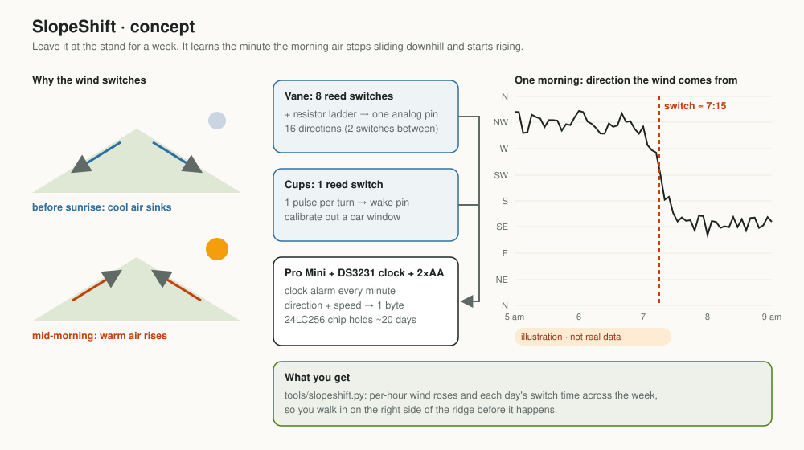
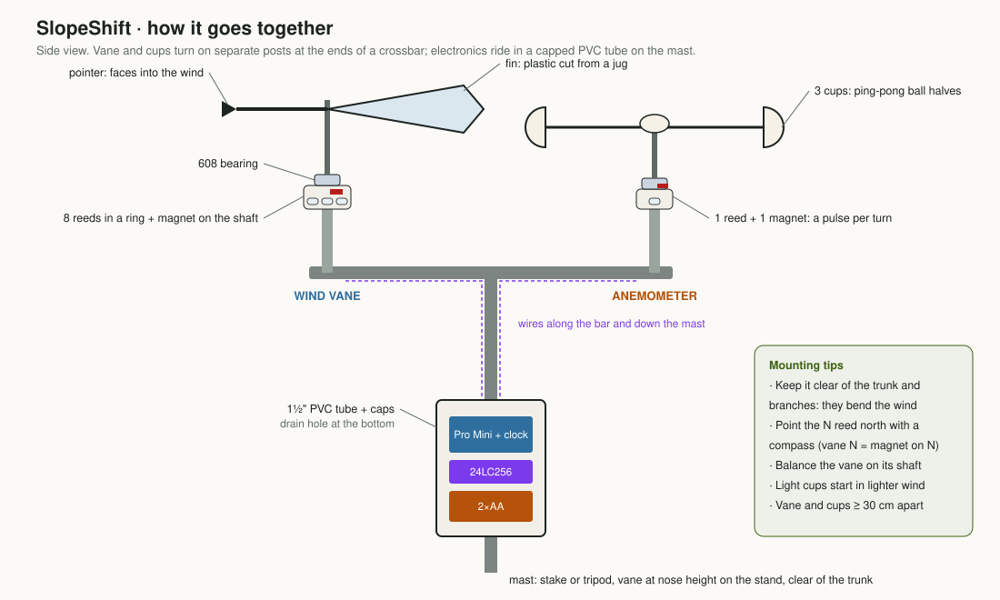
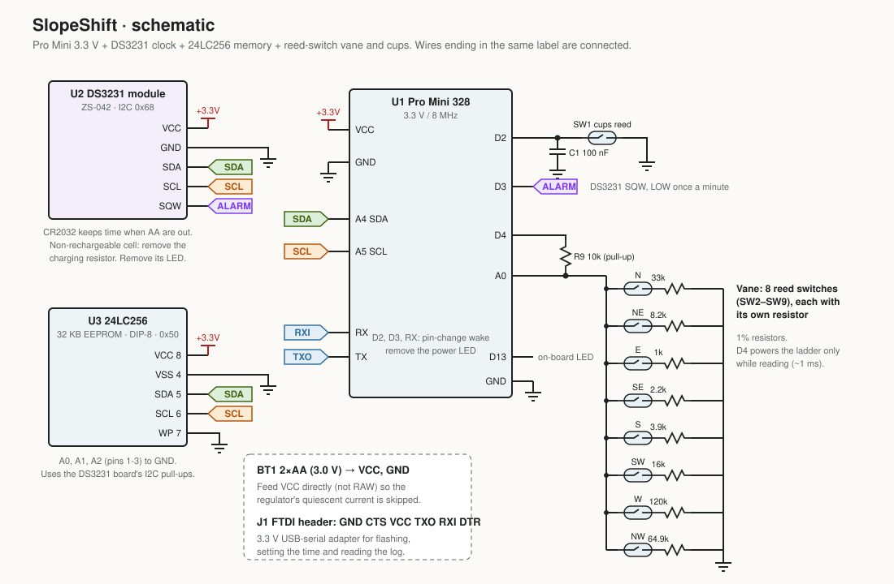
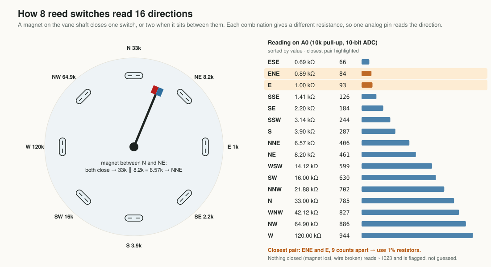
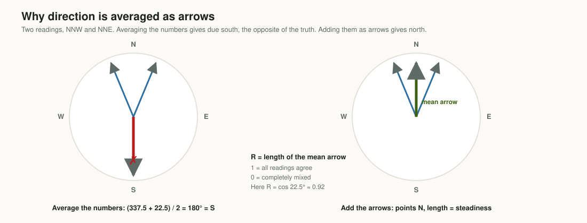
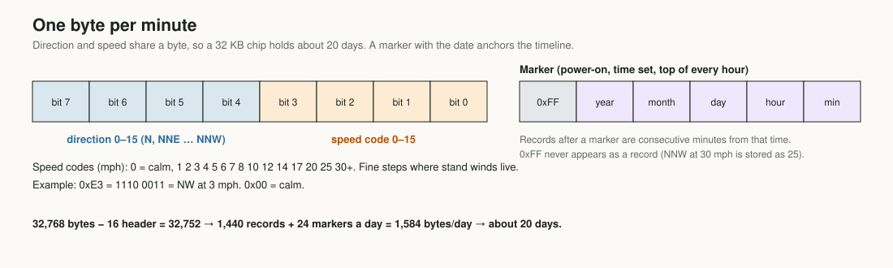
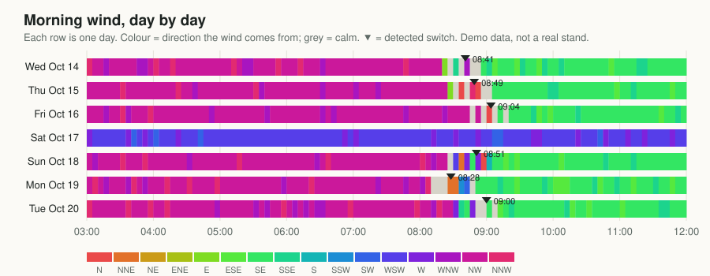
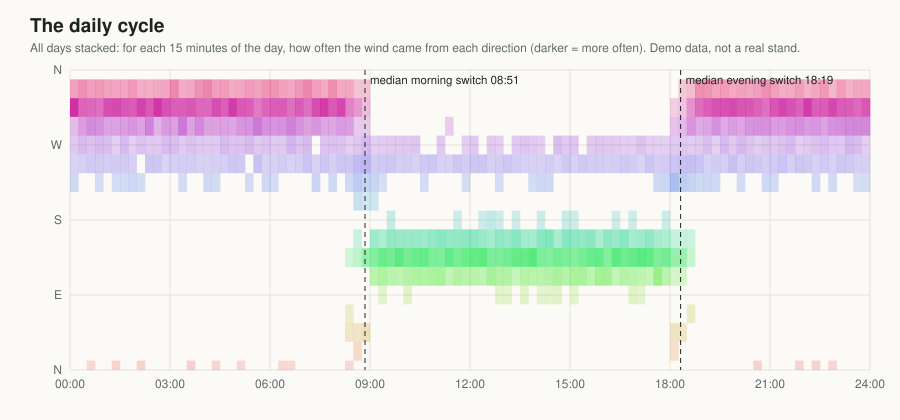
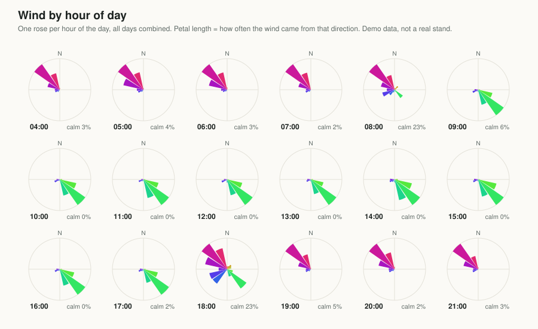
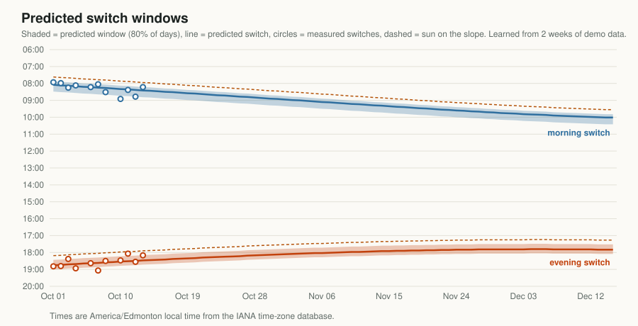

Project 04 · Wind and scent
When does the wind switch at your stand?
On calm, clear days, hills make their own wind. It drains downhill all night, climbs once the sun arrives, and turns around again at dusk. When it turns decides where your scent goes. Here's the physics, and a $5 logger that measures it where you sit.

Why hills make their own wind
Ground heats and cools much faster than air. On a clear night it radiates heat to the sky and gets cold; on a sunny morning it soaks up sunlight and gets warm. The thin layer of air touching a slope takes on the slope's temperature, while air at the same height out over the valley doesn't. That difference in temperature is a difference in density, and density differences on a slope make air move.
- Overnight, slopes cool. The air against them becomes colder and denser than its surroundings and slides downhill like a very thin, slow river. Meteorologists call this a katabatic or drainage wind.1 It's usually light, a few miles per hour, and surprisingly steady in direction.
- Once the sun reaches a slope, it warms. The air against it becomes buoyant and creeps upslope: an anabatic or upslope wind. It tends to be gustier than the night flow, because warm air rises in bubbles rather than a smooth sheet.
- Near sunset it reverses. Slopes fall into shade and start cooling again, and the drainage flow returns.
Between the two regimes there's often a stretch of light, shifting air while the slope changes over. That's what hunters describe as the wind "swirling".
Between the two regimes there's a stretch of light, shifting air. That's the swirl.
Valleys add a second, slower layer to the pattern. Along a valley's length, air tends to flow up-valley during the day and down-valley at night. That flow usually lags the slope winds by an hour or more, because it takes longer to warm or cool a whole valley's worth of air.
Cold-air pools and the lid
Drainage air has to go somewhere. It collects in hollows, creek bottoms and basins, building a pool of cold air that can be noticeably colder than the slopes above, a familiar feeling walking down into a bottom before dawn. The top of that pool is a temperature inversion, colder air under warmer, which acts like a lid. Smoke, fog and scent released inside the pool tend to stay in it and spread sideways rather than rise.
The pool breaks up as the sun warms the slopes and the air at the bottom. That's part of why the morning switch can feel abrupt in a bottom and gradual on a ridge.
What moves the switch
- Slope aspect. East-facing slopes get sun first and switch first in the morning. West-facing slopes switch later in the morning and hold their upslope wind later into the evening. In the northern hemisphere, north-facing slopes get little direct sun and may barely switch on short winter days.
- Steepness and cover. Steep, open slopes heat and cool fastest. Thick timber shades the ground and slows everything down.
- Season. Later sunrise and a lower sun in late fall push the morning switch later and weaken the daytime upslope flow.
- Cloud. Overcast skies damp both regimes. The switch may come late, be weak, or never happen.
- Local terrain. Draws, saddles, benches, field edges and openings in timber channel and delay the flow. That's the part no forecast can tell you.
When the weather wins
Thermals are gentle forces. When the large-scale wind (the one in the forecast, driven by highs, lows and fronts) is strong, it simply overrides them for the day. The thermal pattern still exists underneath, but you'll feel the big wind instead. A common rule of thumb is that thermals matter most on clear, calm-to-light days; once the forecast wind is brisk, hunt the forecast. SlopeShift's switch finder reports no switch on days where the morning baseline wasn't steady, and those days are usually exactly these.
Scent rides the air
Your scent goes where the air goes. Scent isn't a beam; it's a plume that spreads and meanders as it drifts, and in light air it hugs the ground. Morning drainage tends to carry it down toward bottoms. Daytime upslope air carries it up toward benches and ridges, and evening drainage pours it back down. During the swirl it can go anywhere.
The useful question isn't "which way is the wind today?" It's: at this stand, at the time I'll be sitting, which way will the air be moving, and how reliably?
A stand that's perfect at 9:30 can be wrong at 7:30 if the switch comes at 8:30. Knowing the switch window, and how much it wanders from day to day, turns this into a plan. It tells you when to be in, when to leave, and which route keeps your trail out of air moving toward where you expect deer to be.
Why measure at the stand
Weather stations and forecast models describe wind about 10 metres off the ground, in the open, often many kilometres away. They're good at the big picture and blind to a thermal draining down one particular draw at nose height under a canopy. A cheap logger left at the exact spot and seated height for a week or two of mornings measures what you actually care about. Two loggers at two candidate stands tell you even more.
The design

A wind vane and a cup anemometer, both built from reed switches and small magnets, feed a 3.3 V Pro Mini. A DS3231 clock module wakes it once a minute, and a 24LC256 memory chip stores one byte per minute for about 20 days. The rest is scrap: a plastic jug for the fin, ping-pong ball halves for cups, skateboard bearings, PVC pipe.


Sixteen directions from eight switches
Eight reed switches sit in a ring under the vane shaft, and a magnet on an arm closes whichever one it sits over. Each switch connects the analog pin to ground through a different resistor, and a 10 kΩ resistor pulls the pin up. One switch closed makes a voltage divider. When the magnet sits between two switches, both close, and their combined (parallel) resistance gives a third value in between. Eight switches give sixteen distinct readings.

That 9-count gap is the most demanding number in the build. With ordinary 5% resistors, E and ENE could drift into each other, so the parts list calls for 1%. The firmware decodes by nearest match. A reading near 1023, meaning nothing is closed (a lost magnet or a broken wire), is flagged as unknown rather than guessed. And because the pull-up is powered from a digital pin only during the millisecond it takes to read, the ladder draws nothing while the chip sleeps.
Averaging a direction
Each minute the vane is read seven or eight times, and those readings have to become one number. The obvious way, adding the angles and dividing, is wrong in a way that matters most exactly when you care. Wind from just west of north and just east of north averages to due south.

The fix comes from circular statistics.2 Turn each reading into an arrow of length one, add the arrows, and take the direction of the sum. The length of the averaged arrow, between 0 and 1, is a free bonus. Called the mean resultant length R, it measures how steady the wind was: near 1 when every reading agreed, near 0 when the wind was all over the place. The switch finder uses it to decide whether a morning's baseline wind was steady enough to trust.
Measuring speed
A cup anemometer spins at a rate roughly proportional to wind speed. One magnet on the hub closes one reed switch per turn, and each closure wakes the chip just long enough to add one to a counter. Speed is turns per second times a calibration factor k: 1.492 mph per turn per second for SparkFun's cups, something else for homemade ones. You measure yours by holding the cups out of a car window at a few steady speeds on a calm day.
Real cups have quirks. They need a little wind to start turning (their starting threshold), so readings under about 1 mph mean "calm", not zero. They speed up faster than they slow down, so in gusty wind they read a little high. For finding a switch time, neither matters much: the direction change is the signal.
Reed contacts also bounce for a fraction of a millisecond when they close, which could count one turn as several. A 100 nF capacitor across the switch, working with the chip's internal pull-up, smooths that out in hardware. That has to happen in hardware, because the chip is asleep when it happens and can't time anything.
Why it needs a real clock
The whole point is a time of day compared across many days, so the clock has to be good. The ATmega's built-in watchdog oscillator can be off by about 10%, which is hours per day. Its 8 MHz ceramic resonator is better, but at around ±0.5% it can still drift several minutes a day, enough to smear a real 08:30 switch across most of an hour over a week.
The DS3231 is a temperature-compensated crystal clock rated at ±2 parts per million, about a minute a year.3 It runs from its own coin cell when the AAs are out, and its alarm pin wakes the Pro Mini exactly on each minute. That's worth $1.50.
One byte per minute

Direction needs 4 bits for sixteen points. Speed gets the other 4 as a code with fine steps where stand winds live (1, 2, 3 … 8 mph) and coarse ones above. A six-byte timestamp marker is written at power-on, when you set the clock, and at the top of every hour. Records between markers are consecutive minutes, so if anything glitches, the timeline re-anchors within the hour rather than drifting for the rest of the log. 32 KB holds about 20 days.
Power
The Pro Mini spends nearly all its time in power-down sleep, drawing a few microamps. It wakes briefly every 8 seconds for the vane, on each cup turn, and once a minute to write a byte. On paper the clock module dominates the budget at roughly a tenth of a milliamp or more by its datasheet. That still puts a pair of AA cells in the months range for a logger you collect after a couple of weeks. The two changes that matter most are removing the module's LED and feeding the Pro Mini on VCC rather than through its regulator. These are estimates; measure your build.
Finding the switch
The report tool turns a log into one switch time per morning and evening:
- Baseline. The vector-average direction of non-calm minutes from 03:00 to 06:00 (13:00 to 16:00 for the evening). If its steadiness R is below 0.5, as on a gusty or frontal day, it doesn't guess.
- Slide a 20-minute vector average forward from the end of the baseline.
- Switch = the first 20-minute window more than 90° from the baseline whose next two windows agree with it within 45°. That stops a single swirl or gust from counting.


To test it, the demo generator writes weeks with known switch times plus realistic noise, calm spells and the occasional frontal day. On 20 such weeks the finder lands within 25 minutes of every true switch, usually within 10 (median 6), and never reports a switch on a frontal day. Real stands will be messier than generated data. The thresholds are named constants at the top of slopeshift.py, meant to be tuned once there's real data.

Learning your stand, then predicting any day
Measuring a week of switches is useful. Being able to say when the switch will come on a day you never measured is better. The rut is in November; you might only get to scout in October.
The physics gives a way in. Slope winds are driven by sunlight on the slope: the upslope flow begins after direct sun reaches it, and the drainage returns after the sun leaves it. Studies of slope flows find the timing tracks that solar forcing, and that shading moves the evening transition by about an hour between opposite slopes. They also find that onset times vary a lot from site to site, which means the lag has to be measured locally.4 So SlopeShift's tool doesn't model the atmosphere. It measures one thing at your stand:
Working out when direct sun reaches a slope takes the sun's position for that date and place, the slope's angle and the direction it faces, and optionally the height of ridges that block the sun. A 25° slope facing west near Calgary in late October gets direct sun about two hours after sunrise. A 10° ridge to the east delays first light on an east-facing stand by an hour.

On generated data, a model learned from two October weeks predicts November's switches with a median error of about 10 minutes, and 95% fall inside the predicted window. That test checks the method, not the physics: real stands are noisier, and cloudy or windy days don't follow the sun. The tool is honest about that. It reports the raw spread of your switch times next to the spread once the sun is accounted for, so you can see how much the sun model actually explains at your stand.
You can try all of this in the SlopeShift Analyzer. Load a log, or the two weeks of demo data, describe the slope, and it forecasts the switch for any dates you pick. It runs in your browser, so your data never leaves it.
What we checked. Hunting apps such as Thermal Scout, HuntWise and onX forecast thermal shifts from weather data and terrain; hunters wanting to record wind changes still improvise. We couldn't find a tool that measures a stand and then learns that stand's own sun-to-switch lag to predict future days. If you know of one, tell us.
Time zones come from the IANA database, which matters this year: Alberta stays on UTC−6 year-round from 2026 and doesn't fall back on November 1.
Using it to pick stands
- Scout pre-season, then predict the rut. Learn the stand from two October weeks and print November's predicted windows.
- Mount it right. Put a logger at each candidate stand for at least a week; two is better. Mount it at seated height, clear of the trunk, and line up north with a compass.
- Read the window, not the average. "Median 08:51, earliest 08:28, latest 09:04" from one week means plan for about 08:30–09:05, not 08:51 sharp, and widen it if the week was short.
- Plan mornings around the window. Decide whether you want to be settled before the switch or arrive after it. Then pick the approach that keeps your scent in air moving away from where you expect deer at that time.
- Plan evenings the same way. The evening switch back to drainage is often the more consistent one, and it decides whether your scent pours down into the bottom you're watching.
- Learn from the no-switch days. They're weather days. Compare them with what the forecast said, so you learn when to trust the forecast wind over the thermals.
- Pair it with Trail Tally. Trail Tally tells you when animals pass; SlopeShift tells you which way the air was moving at that hour.
- Check the rules. Some public lands restrict leaving devices out, as with trail cameras. Know yours.
Limits and next steps
- Not yet built. The firmware is unit-tested on a PC and compiles for the Pro Mini, but hasn't run on real hardware. Expect to tune debounce, vane balance and cup calibration on the first build.
- Light air. Thermals are often 1–3 mph. Heavy homemade cups or a sticky vane may read "calm" when you'd feel a drift. Light parts and good bearings matter more than anything else.
- One spot, one height. The wind 20 metres away in a draw can differ. Two loggers at two stands beat one perfect one.
- Ideas: a live LED that shows "your scent is blowing toward the trail" from a trail bearing you set; a temperature sensor to watch the slope cool directly; an ESP32 version that sends a morning summary to your phone.
Kits and build details: ZalaStack.
Notes
- Katabatic (downslope) and anabatic (upslope) winds, and the slower valley winds, are standard topics in mountain meteorology; any introductory text on mountain weather covers them, with the caveat that real terrain is always messier than the textbook ridge. ↩
- Circular statistics (the mean direction and mean resultant length) are the standard way to summarise angles; see any treatment of directional statistics. SlopeShift's averaging is in wind.cpp and slopeshift.py. ↩
- The DS3231's accuracy rating applies over its normal temperature range; see the manufacturer's datasheet. A cold stand at dawn is well within it. ↩
- On solar control of slope-flow timing, shading and site-to-site variability, see the review "Understanding Thermally Driven Slope Winds: Recent Advances and Open Questions" in Boundary-Layer Meteorology (2023), and studies of the evening transition such as those summarised on katabatic flow through the evening transition. ↩